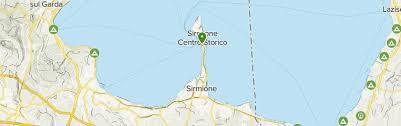

ABOUT

Sirmione est un petit village d'une population de moins de
9000 habitants, qui se trouve sur le Lac de Garde. Cependant, bien qu'il soit
relativement petit, il regorge tout-de-même de choses à faire et à voir,
d'histoire et de joyaux d'architecture. La région esthabitée depuis l'âge
de pierre, lorsqu'elle était surement peuplée de pêcheurs qui vivaient dans
des maisons sur pilotis sur les berges du lac.